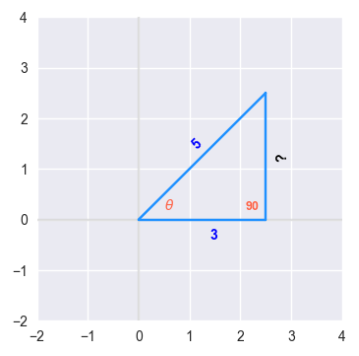
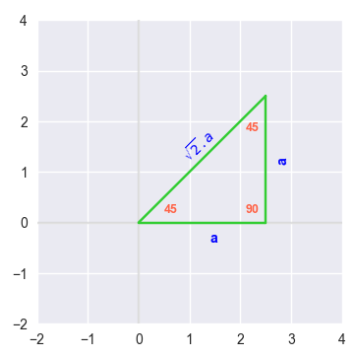

| PolarSPARC |
Introduction to Trigonometry
| Bhaskar S | 02/25/2023 |
Introduction
Trigonometry is the branch of mathematics that deals with Angles and Ratios of sides of a Triangle, which finds its application in astronomy, electronics, graphics, navigation, etc.
Radians and Degrees
There are two ways to measure an angle between two lines:
Radians
Degrees
The starting position of a line from the origin to some units along the x-axis is referred to as the Initial Side. An angle is formed when another line (from the origin) starting at the initial side moves counter-clockwise some units. The second line is referred to as the Terminal Side.
The following illustration depicts the two sides and the angle $\theta$ between them:
A Radian is the measure of the angle $\theta$ between the initial side and the terminal side in a circle of radius $r$ such that they intercept an arc of length $a$, which equals the length of the radius $r$.
The following illustration depicts the two sides, the angle $\theta$ between them, and the arc of length $a$ in a circle of radius $r$:
In mathematical terms:
$\theta = \Large{\frac{a}{r}}$ ..... $\color{red} (1)$
where $\theta$ is measured in radians.
From geometry, we know that one full rotation along the circle of radius $r$ is the circumference of the circle and equals $2{\pi}r$.
Therefore, the angle $\theta$ for one full rotation of the circle using $\color{red} (1)$ from above (in radians) is:
$\theta = \Large{\frac{a}{r}} \normalsize = \Large{\frac{2 \pi r}{r}} \normalsize = 2 \pi$
There are 360 degrees in a full rotation of a circle. A Degree (denoted using $^{\circ}$) is therefore $\Large{\frac{1}{360}}$ of a complete rotation around a circle.
In mathematical terms:
$360^{\circ} = 2 \pi$ (radians)
Or:
$1^{\circ} = \Large{\frac{\pi}{180}}$ (radians) ..... $\color{red} (2)$
Also:
$1$ (radian) $= \Large{(\frac{180}{\pi})^{\normalsize\circ}}$ ..... $\color{red} (3)$
Let us look at an example for degrees to radians conversion.
| Example-1 | Convert the angles $60^{\circ}$ and $-150^{\circ}$ to radians |
|---|---|
|
To convert a degree to a radian measure, we need to multiply the degree with $\Large{\frac{\pi}{180}}$. Therefore, 1) $60^{\circ} = 60 . \Large{\frac{\pi}{180}} \normalsize = \Large{\frac{\pi}{3}} \normalsize \text{rad}$ 2) $-150^{\circ} = -150 . \Large{\frac{\pi}{180}} \normalsize = -\Large{\frac{5.\pi}{6}} \normalsize \text{rad}$ |
|
Now, let us look at an example for radians to degrees conversion.
| Example-2 | Convert the radians $\Large{\frac{\pi}{3}}$ and $-\Large{\frac{3.\pi}{2}}$ to degrees |
|---|---|
|
To convert a radian to a degree measure, we need to multiply the radian with $\Large{\frac{180}{\pi}}$. Therefore, 1) $\Large{\frac{\pi}{3}} \normalsize \text{rad} = \Large{\frac{\pi}{3}} \normalsize . \Large{\frac{180}{\pi}} \normalsize = 60^{\circ}$ 2) $-\Large{\frac{3.\pi}{2}} \normalsize \text{rad} = -\Large{\frac{3.\pi}{2}} \normalsize . \Large{\frac{180}{\pi}} \normalsize = -270^{\circ}$ |
|
Trigonometric Functions
In order to define the six trigonometric functions, we will refer the following illustration of a right-angled triangle with an angle of $\theta$:
The side of the triangle that is across the angle $\theta$ is referred to as Opposite, the side of the triangle below the angle of $\theta$ is referred to as Adjacent, and the side of the triangle above the angle of $\theta$ that connects the adjacent side and oppsite side is referred to as Hypotenuse.
The following are the definitions for the six trigonometry functions:
| Name | Description |
|---|---|
| Sine | The sine of $\theta$, denoted as $\sin(\theta)$, is defined as $\Large{\frac{opposite} {hypotenuse}}$ |
| Cosine | The cosine of $\theta$, denoted as $\cos(\theta)$, is defined as $\Large{\frac{adjacent} {hypotenuse}}$ |
| Tangent | The tangent of $\theta$, denoted as $\tan(\theta)$, is defined as $\Large{\frac{opposite} {adjacent}}$ |
| Cotangent | The cotangent of $\theta$, denoted as $\cot(\theta)$, is defined as $\Large{\frac{adjacent} {opposite}}$. In other words, $\cot(\theta) = \Large{\frac{1}{\tan(\theta)}}$ |
| Secant | The secant of $\theta$, denoted as $\sec(\theta)$, is defined as $\Large{\frac{hypotenuse} {adjacent}}$. In other words, $\sec(\theta) = \Large{\frac{1}{\cos(\theta)}}$ |
| Cosecant | The cosecant of $\theta$, denoted as $\csc(\theta)$, is defined as $\Large{\frac{hypotenuse} {opposite}}$. In other words, $\csc(\theta) = \Large{\frac{1}{\sin(\theta)}}$ |
An easy way to remember the fractions for the first three sin, cos, and tan would be with the acronym SOH-CAH-TOA. The remaining three csc, sec, and cot are just the reciprocals of the first three.
The six trigonometric functions can also be defined in terms of a coordinate point $(x, y)$ that lies on the circumference of a circle of radius $r$ (at an angle $\theta$ from the initial side) using the following illustration:
The following are the definitions for the six trigonometry functions with respect to the radius $r$ and a point $(x, y)$:
$\sin(\theta) = \Large{\frac{y}{r}}$
$\cos(\theta) = \Large{\frac{x}{r}}$
$\tan(\theta) = \Large{\frac{y}{x}}$
$\cot(\theta) = \Large{\frac{x}{y}}$
$\sec(\theta) = \Large{\frac{r}{x}}$
$\csc(\theta) = \Large{\frac{r}{y}}$
Let us look at an example now.
| Example-3 | Find the values for the six trigonometric functions given the following right-angled triangle: |
|---|---|
|

We can use the Pythagorean Theorem to find the length of the Opposite side using the formula: $hypotenuse^2 = adjacent^2 + opposite^2$ From the above right-angled triangle, we know: $hypotenuse = 5$ and $adjacent = 3$ Therefore: $5^2 = 3^2 + oppsite^2$ That is: $opposite^2 = 25 - 9 = 16$ Therefore: $opposite = 4$ Now that we have the lengths of all the sides of the right-angled triangle, we can find the values for the six trigonometric functions as follows: $\sin(\theta) = \Large{\frac{opposite}{hypotenuse}} \normalsize = \Large{\frac{4}{5}}$ $\cos(\theta) = \Large{\frac{adjacent}{hypotenuse}} \normalsize = \Large{\frac{3}{5}}$ $\tan(\theta) = \Large{\frac{opposite}{adjacent}} \normalsize = \Large{\frac{4}{3}}$ $\cot(\theta) = \Large{\frac{adjacent}{opposite}} \normalsize = \Large{\frac{3}{4}}$ $\sec(\theta) = \Large{\frac{hypotenuse}{adjacent}} \normalsize = \Large{\frac{5}{3}}$ $\csc(\theta) = \Large{\frac{hypotenuse}{opposite}} \normalsize = \Large{\frac{5}{4}}$ |
|
Now, let us look at another example.
| Example-3 | Find the values for $\sin(45^{\circ})$, $\cos(45^{\circ})$, and $\tan(45^{\circ})$ given the following right-angled triangle: |
|---|---|
|

The two angles in the given right-angled triangle are $45^{\circ}$. From geometry, we know this is an Isosceles triangle, meaning the sides opposite the $45^{\circ}$ angles must be equal length. If the length of the sides Adjacent and Opposite are equal to $a$, then use the Pythagorean Theorem to find the length of the Hypotenuse using the formula: $hypotenuse^2 = adjacent^2 + opposite^2$ Therefore: $hypotenuse^2 = a^2 + a^2 = 2.a^2$ Therefore: $hypotenuse = \sqrt{2}.a$ Now that we have the lengths of all the sides of the right-angled triangle, we can find the values for the given trigonometric functions as follows: $\sin(45^{\circ}) = \Large{\frac{opposite}{hypotenuse}} \normalsize = \Large{\frac{a} {\sqrt{2}.a}} \normalsize = \Large{\frac{1}{\sqrt{2}}}$ $\cos(45^{\circ}) = \Large{\frac{adjacent}{hypotenuse}} \normalsize = \Large{\frac{a} {\sqrt{2}.a}} \normalsize = \Large{\frac{1}{\sqrt{2}}}$ $\tan(45^{\circ}) = \Large{\frac{opposite}{adjacent}} \normalsize = \Large{\frac{a}{a}} \normalsize = 1$ |
|
Trigonometric Identities
In the following paragraphs, we will list the three types of trigonometric identities:
Reciprocal
Quotient
Pythagorean
Reciprocal Identities
The following are the definitions for the trigonometric reciprocal identities:
$\sin(\theta) = \Large{\frac{1}{\csc(\theta)}}$
$\cos(\theta) = \Large{\frac{1}{\sec(\theta)}}$
$\tan(\theta) = \Large{\frac{1}{\cot(\theta)}}$
$\cot(\theta) = \Large{\frac{1}{\tan(\theta)}}$
$\sec(\theta) = \Large{\frac{1}{\cos(\theta)}}$
$\csc(\theta) = \Large{\frac{1}{\sin(\theta)}}$
Quotient Identities
The following are the definitions for the trigonometric quotient identities:
$\tan(\theta) = \Large{\frac{\sin(\theta)}{\cos(\theta)}}$
$\cot(\theta) = \Large{\frac{\cos(\theta)}{\sin(\theta)}}$
Pythagorean Identities
To define the trigonometric pythagorean identities, we will refer to the following illustration of a right-angled triangle with an angle of $\theta$ and the sides $c = hypotenuse$, $a = adjacent$, and $b = opposite$:
From the pythagoream theorem, we know:
$c^2 = a^2 + b^2$ ..... $\color{red} (4)$
Also, we know the definitions for the six trigonometric functions as follows:
$\sin(\theta) = \Large{\frac{b}{c}}$
$\cos(\theta) = \Large{\frac{a}{c}}$
$\tan(\theta) = \Large{\frac{b}{a}}$
$\cot(\theta) = \Large{\frac{a}{b}}$
$\sec(\theta) = \Large{\frac{c}{a}}$
$\csc(\theta) = \Large{\frac{c}{b}}$
The following are the definitions for the trigonometric pythagorean identities:
Dividing equation $\color{red} (4)$ across by $c^2$, we get:
$\Large{\frac{c^2}{c^2}} \normalsize = \Large{\frac{a^2}{c^2}} \normalsize + \Large{\frac{b^2}{c^2}}$
Or:
$\bbox[pink,2pt]{\sin^2(\theta) + \cos^2(\theta) = 1}$
Dividing equation $\color{red} (4)$ across by $a^2$, we get:
$\Large{\frac{c^2}{a^2}} \normalsize = \Large{\frac{a^2}{a^2}} \normalsize + \Large{\frac{b^2}{a^2}}$
Or:
$\bbox[pink,2pt]{1 + \tan^2(\theta) = \sec^2(\theta)}$
Dividing equation $\color{red} (4)$ across by $b^2$, we get:
$\Large{\frac{c^2}{b^2}} \normalsize = \Large{\frac{a^2}{b^2}} \normalsize + \Large{\frac{b^2}{b^2}}$
Or:
$\bbox[pink,2pt]{1 + \cot^2(\theta) = \csc^2(\theta)}$